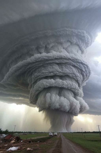
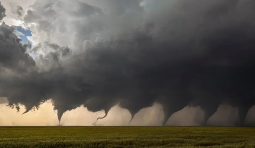
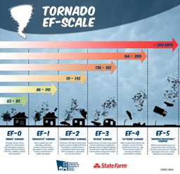

Los tornados son una columna de aire que va rotando de manera muy violenta y que se extiende desde el suelo hasta la base de una nube que, en general, es cumuliforme.
Un tornado puede desplazarse varios kilómetros antes de desaparecer, dejando tras su paso graves daños materiales e incluso humanos. La mayoría, -con una anchura de unos 75 metros- alcanzan velocidades que oscilan entre los 65 y los 180Km/h, si bien algunos pueden llegar a alcanzar velocidades de hasta 450km/h -incluso más- y a tener una anchura de 2 kilómetros. Su recorrido, sin separarse del suelo, puede oscilar entre 80 y 100 kilómetros.
Para saber cómo se forma un tornado, primero hay que conocer qué condiciones son necesarias para su formación. La inestabilidad atmosférica y la formación de tormentas conocidas como superceldas tormentosas son algunas de las condiciones para que se produzca un tornado. Durante mucho tiempo, la formación de los tornados ha albergado muchas incógnitas para los científicos y meteorólogos, pero se conocen las condiciones y las diferentes etapas para su formación.
Existen diferentes tipos de tornados los terrestres y los tornados de agua. Estos últimos se forman sobre cuerpos de agua que conectan con las nubes formando una corriente de aire con forma de embudo.

Para que se forme un tornado se tienen que dar gran cantidad de condiciones; por suerte demasiadas para que por suerte resulten tan comun
1-Una corriente de aire fría y otra caliente convergen en horizontal.
2-Cuando se produce este encuentro, el aire caliente que debería estar por encima del frío queda atrapado en un plano inferior y ocasiona que ambas corrientes fluyan a diferentes alturas de forma paralela y en direcciones opuestas.
3-A partir de ahí, la corriente de aire frío y seco desciende mientras que la otra, que es más cálida y húmeda se eleva, produciéndose una corriente en forma de tubo giratorio.
4-La velocidad de esta corriente va aumentando según avanza el proceso. El aire caliente asciende y el frío desciende, con lo que el vórtice del tornado adopta una posición vertical.
5-Cuando este vórtice toca el suelo, la corriente se acelera y produce un remolino en forma de trompo.
6-El aire frío desciende alrededor de los flancos del trompo, y el flujo de aire caliente que está atrapado bajo la primera, encuentra en el vórtice una vía para ascender. Y así se eleva de manera vertical con más fuerza y con una mayor carga.
7-Una vez que se forma el tornado ha alcanzado altura y potencia se produce un efecto de aspiración que es el que posibilita la capacidad de absorción de casas y viviendas a lo largo de su recorrido.

1. Tornados Supercelulares (Tornados Típicos)
Son los más comunes, los más destructivos y los que alcanzan las magnitudes más altas en la Escala de Fujita Mejorada (EF). Se forman a partir de una supercelda, que es una tormenta severa con una corriente ascendente en rotación profunda llamada mesociclón.
Tornado de cuerda (Rope tornado): Suelen ser los tornados en su fase inicial o final. Son delgados, sinuosos y se retuercen como una cuerda. Aunque parezcan pequeños, siguen siendo muy peligrosos.
Tornado de cono: Tienen la silueta clásica de un embudo: más anchos en la base de la nube y más estrechos en el contacto con el suelo.
Tornado de cuña (Wedge tornado): Son monstruos meteorológicos. Son tan anchos como altos (a veces miden más de un kilómetro de diámetro), lo que hace que a menudo no parezcan un tornado, sino una masa de nubes oscuras tocando el suelo.
Tornado de vórtices múltiples: Un solo tornado principal que contiene varios sub-vórtices más pequeños rotando alrededor del centro. Son extremadamente destructivos porque los vientos de los vórtices pequeños se suman a la velocidad del tornado principal.
2. Tornados No Supercelulares
Estos tornados no dependen de una tormenta rotativa (supercelda). Se forman cuando corrientes de aire que ya están rotando cerca del suelo son estiradas verticalmente por una nube en crecimiento.
Tromba terrestre (Landspout): Es el equivalente no supercelular del tornado común. Suelen ser más débiles, delgados, no están asociados a mesociclones y muchas veces no se nota el embudo completo hasta que levantan polvo en el suelo.
Tromba marina (Waterspout): Tornados que se forman o se desplazan sobre el agua. Las trombas marinas "verdaderas" son no supercelulares (ligadas a nubes de tormenta en desarrollo) y suelen ser relativamente débiles, aunque si tocan tierra pueden causar daños.